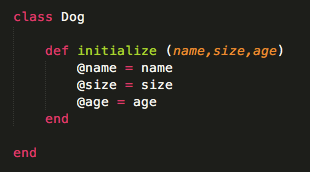
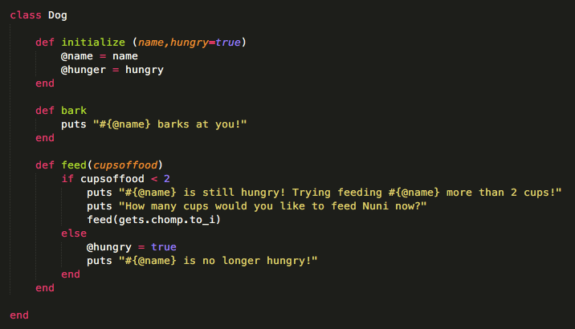
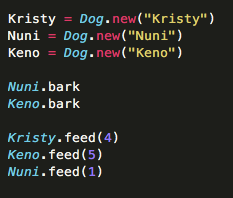
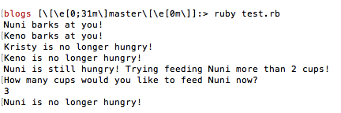

Dev Bootcamp Phase 0
Week 6
January 12, 2016
What is a ruby class and why would we use one?
I like to think of 'classes' as categories. Categories are groups of things that are similar in a lot of ways. For example you might say clothing is a category --- you have shirts and pants and jackets and underwear, but these are all clothing. And, although they have differences, there are a lot of commonalities across these items:
- You can put these items on
- You have to wash all these items after wearing them
- They are each made of fabric
- They each cost money at a store
- etc ...
So if you were creating all of these items in ruby, you *could* just write out all of the methods dealing with these commonalities for every single type of item (shirts, pants, etc.) OR you could create a clothing class and just write these methods one time!
But let's see this in action .... with a Dog class!
First I will create a new dog class. When it is initialized (meaning when I create a new instance of the class), I'll ask for a name and set its default hunger ('hungry') to true. You'll notice I create local variables inside the class for these as well (using the '@' symbol) --- this is because I might want to use these for the methods I write inside the class.
Next I'll create two methods for my dog class. Let's say first, I want my dogs to be able to bark. I can create a method that has them do just that and tells me by printing that they barked to the console. If I wanted to feed them, I could write a method for this too (with the parameter of number of cups of food). Maybe my dogs need more than 2 cups to be full? I can let whoever uses my feed method on a dog they've created from my class know this AND give them a chance to give the dog more. When my dog has been given more than two cups, he or she won't be hungry anymore and I can print this to the console as well. I've done all this in the sample code below:
Now let's see my dog class in action! I can create a bunch of dogs and feed them without having to write individual methods for them. See below!
Code:
Output to the console (note I had to type in 3 myself once prompted to feed Nuni):
Now you might think to yourself: wow you wrote a ton of code in that class just to save yourself a little bit of space and time re: feeding my dogs. BUT imagine if I wanted to feed 100 dogs or have all 100 of my dogs bark. Think about how much time I saved putting those methods in a new class instead of recreating them over and over again for each dog.
And this applies to all classes!
So remember ... if you have a lot of code to write and methods that may repeat on objects you create that also share qualities --- think of creating a class instead!